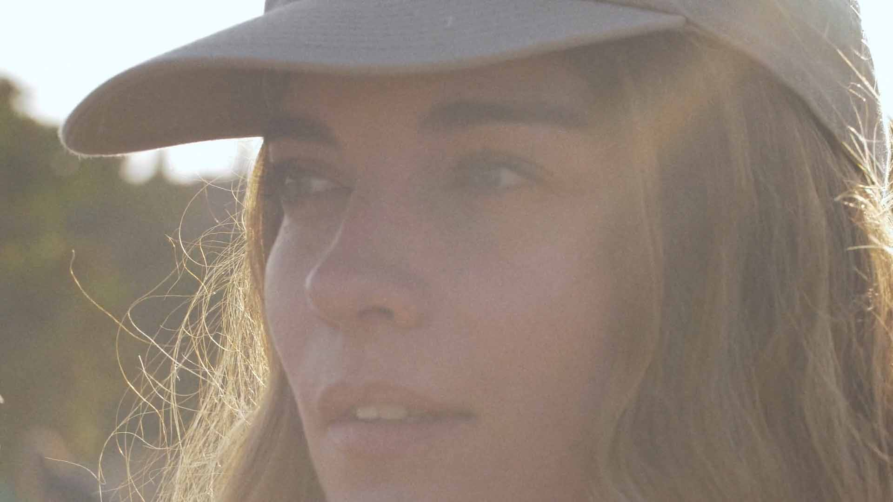
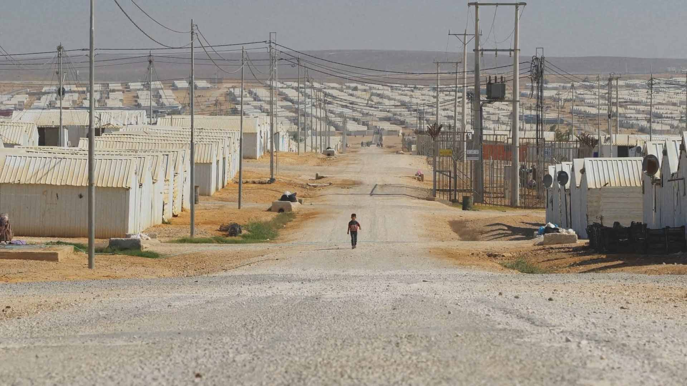
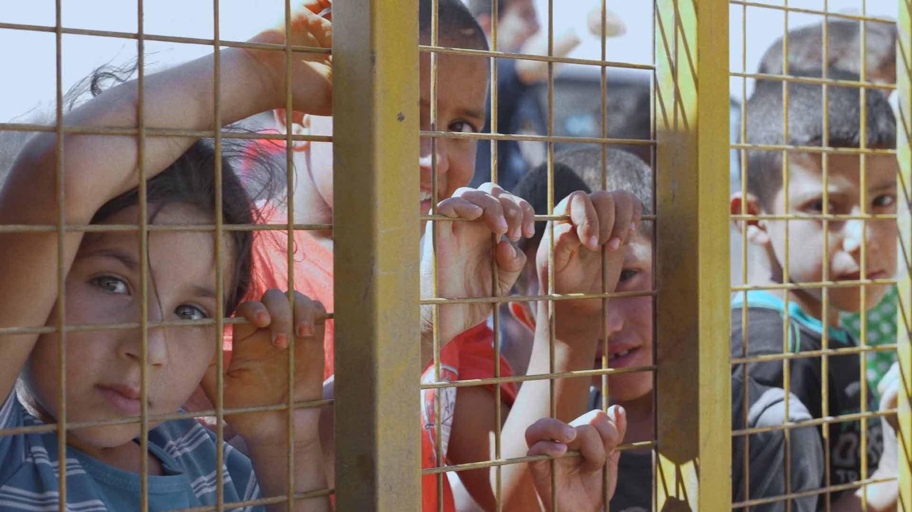
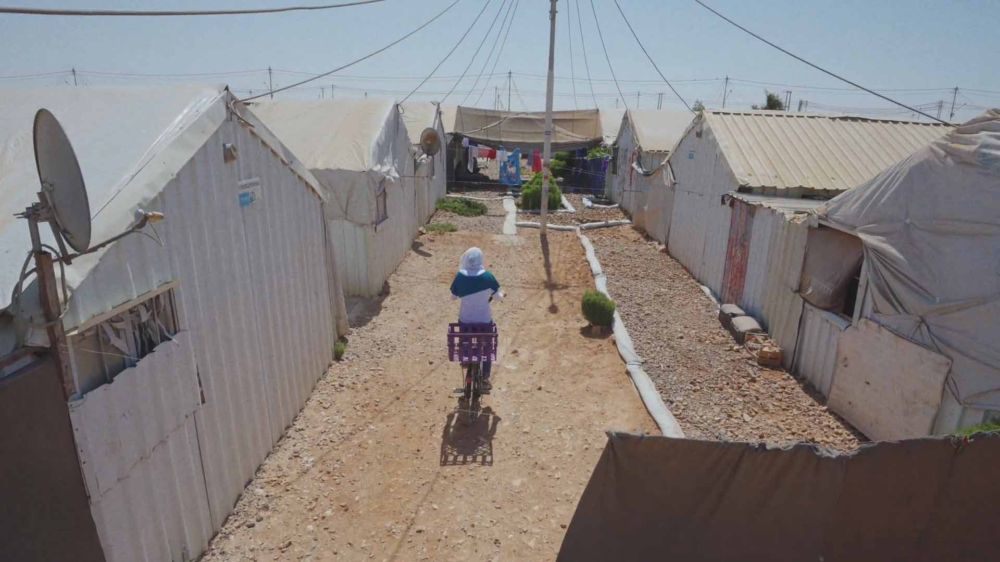
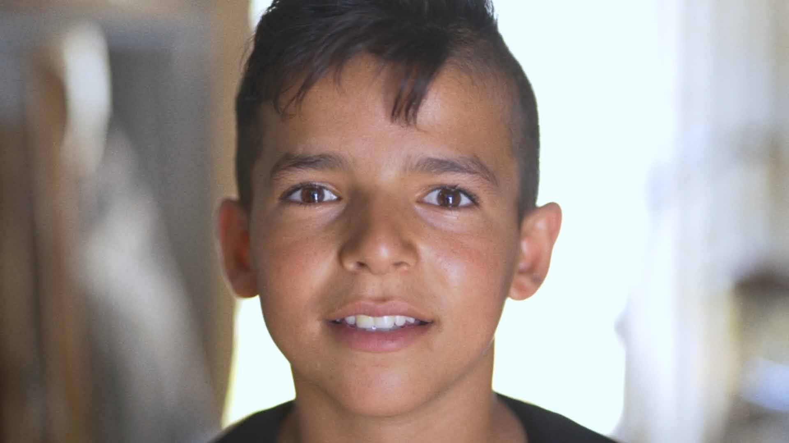
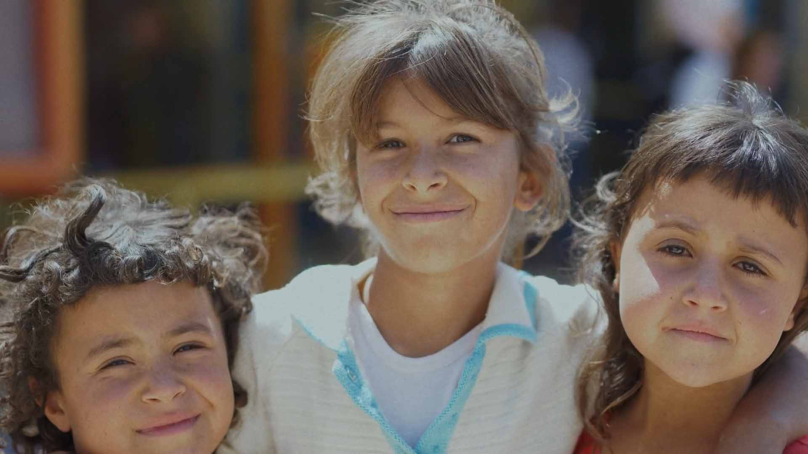

Project: Annie Murphy at Azraq camp in Jordan
Client: CARE Canada
Producer: Shannon Elliot
Director: Joshua Morin
DP: Blaze Nowara
Right now, there are nearly 80 million people around the world who have been forced from their homes and living in vulnerable settings, often in camps or informal settlements. Many of them have very little access to public health infrastructure or are living in countries with weakened public health services.
CARE is ensuring women and girls like Asma have tools and support to survive COVID-19 and to help forge a more equal, more resilient world. We know that women's leadership is critical to enable the world to recover better, greener and more inclusively.
The world will only be safe when all of us are safe. Together, we can build a more equal, more resilient world for all of us. Visit https://care.ca/ for more information on how you can help.